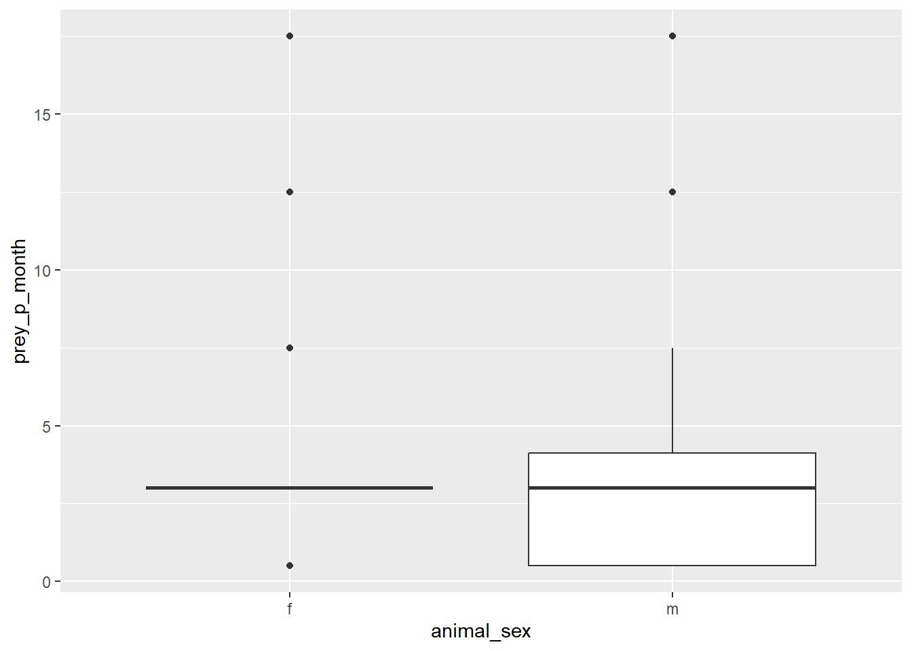

Rows: 18215 Columns: 11
── Column specification ────────────────────────────────────────────────────────
Delimiter: ","
chr (2): tag_id, study_name
dbl (5): event_id, location_long, location_lat, ground_speed, height_above_...
lgl (3): visible, algorithm_marked_outlier, manually_marked_outlier
dttm (1): timestamp
ℹ Use `spec()` to retrieve the full column specification for this data.
ℹ Specify the column types or set `show_col_types = FALSE` to quiet this message.
Loading required package: kableExtra
Attaching package: 'kableExtra'
The following object is masked from 'package:dplyr':
group_rows
library(lubridate)
Loading required package: timechange
Attaching package: 'lubridate'
The following objects are masked from 'package:base':
date, intersect, setdiff, union
There is a lot of data to explore. As both a birder and a cat lover, I know that cats allowed outdoors can have a negative impact on wildlife, so I decided to focus on cat indoor hours and prey per month first. Of interest, there is no completely indoor cat, average prey catch per month ranges from zero to 17.5, and a field called “hunt,” which means if the cat was allowed to hunt or not. I’m not sure if this means the cat was a dedicated mouser or just not controlled. I think the latter and I would expect a cat not allowed to hunt would have no prey. Also of note, there are 9 observations with a missing hunt value. Most cats (88%) are allowed to hunt.
# A tibble: 9 × 5
tag_id animal_id hunt prey_p_month hrs_indoors
<chr> <chr> <lgl> <dbl> <dbl>
1 Ares Ares NA 0 7.5
2 Wilfred-Tag Wilfred NA 0 7.5
3 Lightening Bugg-Tag Lightening Bugg NA 0 12.5
4 Jezebel-Tag Jezebel NA 0 17.5
5 Tipsy-Tag Tipsy NA 0 17.5
6 Maggie-Tag Maggie NA 0 22.5
7 Lily-Tag Lily NA 0 22.5
8 Pants-Tag Pants NA 0 12.5
9 Neil-Tag Neil NA 0 7.5
# No prey caught and varying number of hours indoors. Not sure how to address yet.# Sanity check - if cats are not allowed to hunt, did they catch any prey?cats_uk_reference %>%select(tag_id, animal_id, hunt, prey_p_month, hrs_indoors) %>%filter(hunt ==FALSE) %>%group_by(prey_p_month) %>%summarize(n())
# Confirmed cats not allowed to hunt means they don't have the opportunity to catch prey, so perhaps the cat was confined in a way that did not allow prey catching when they went outdoors. Focusing on cats able to hunt. Leaving out cats where it is not known if the cat can hunt or not because none of them caught any prey and it is unknown if they had the opportunity catch prey.hunting_cats <- cats_uk_reference %>%filter(hunt ==TRUE)vtable::vtable(hunting_cats, lush =TRUE)
hunting_cats
Name
Class
Values
Missing
Summary
tag_id
character
'Abba-Tag' 'Alfie-Tag' 'Amber-Tag' 'Athena' 'Balu-Tag' and more
0
nuniq: 81
animal_id
character
'Abba' 'Alfie' 'Amber' 'Athena' 'Balu' and more
0
nuniq: 81
animal_taxon
character
'Felis catus'
0
nuniq: 1
deploy_on_date
POSIXct
Time: 2017-06-03 01:02:09 to 2017-11-24 09:43:09
0
median: 2017-07-29 05:36:35, nuniq: 81
deploy_off_date
POSIXct
Time: 2017-06-10 02:10:52 to 2017-11-30 00:52:55
0
median: 2017-08-08 03:58:11, nuniq: 81
hunt
logical
TRUE FALSE
0
mean: 1, sd: 0, nuniq: 1
prey_p_month
numeric
Num: 0.5 to 17.5
0
mean: 4.667, sd: 4.981, nuniq: 5
animal_reproductive_condition
character
'Neutered' 'Not fixed' 'Spayed'
3
nuniq: 3
animal_sex
character
'f' 'm'
0
nuniq: 2
hrs_indoors
numeric
Num: 2.5 to 22.5
0
mean: 11.204, sd: 4.794, nuniq: 5
n_cats
numeric
Num: 1 to 4
0
mean: 2.062, sd: 0.94, nuniq: 4
food_dry
logical
TRUE FALSE
0
mean: 0.951, sd: 0.218, nuniq: 2
food_wet
logical
TRUE FALSE
0
mean: 0.741, sd: 0.441, nuniq: 2
food_other
logical
TRUE FALSE
9
mean: 0.528, sd: 0.503, nuniq: 2
study_site
character
'UK'
0
nuniq: 1
age_years
numeric
Num: 0 to 13
1
mean: 5.4, sd: 3.161, nuniq: 14
vtable::sumtable(hunting_cats)
Summary Statistics
Variable
N
Mean
Std. Dev.
Min
Pctl. 25
Pctl. 75
Max
animal_taxon
81
... Felis catus
81
100%
hunt
81
... No
0
0%
... Yes
81
100%
prey_p_month
81
4.667
4.981
0.5
3
3
17.5
animal_reproductive_condition
78
... Neutered
42
53.8%
... Not fixed
2
2.6%
... Spayed
34
43.6%
animal_sex
81
... f
37
45.7%
... m
44
54.3%
hrs_indoors
81
11.204
4.794
2.5
7.5
12.5
22.5
n_cats
81
2.062
0.94
1
1
3
4
food_dry
81
... No
4
4.9%
... Yes
77
95.1%
food_wet
81
... No
21
25.9%
... Yes
60
74.1%
food_other
72
... No
34
47.2%
... Yes
38
52.8%
study_site
81
... UK
81
100%
age_years
80
5.4
3.161
0
3
7.25
13
There are 81 cats allowed to hunt. Approximate prey per month ranges from 0.5 to 17.5 (half values because approximate average per month). There is approximately the same number of male and female cats (45.7% female, 54.3% male), and most cats are fixed (97.4%). Indoor hours ranges from 2.5 to 22.5 hours with a mean of 11-ish hours, with most cats between 7.5 and 12.5 hours indoors. Cat age ranges from 0 (less than a year old) to 13 with an average of 5.4 years, with most cats between 3 and 7.25 years. Moving on to explore graphically.
# View approximate prey per month distributionggplot(hunting_cats, aes(x=prey_p_month)) +geom_histogram()
`stat_bin()` using `bins = 30`. Pick better value with `binwidth`.
# There are five unique values. Questionaire might have binned somehow but unable to check. hunting_cats %>%group_by(prey_p_month) %>%summarize(n())
# Check for relationships between variables.ggplot(hunting_cats, aes(x = hrs_indoors, y = prey_p_month)) +geom_point()
# As expected, the more time a cat is indoors, the fewer prey it catches.ggplot(hunting_cats, aes(x = animal_sex, y = prey_p_month)) +geom_boxplot()

# There is more variance in prey catching with males than females, but both have an average of ~3 per month.ggplot(hunting_cats, aes(x = animal_reproductive_condition, y = prey_p_month)) +geom_boxplot()
# Cats that are fixed seem to have the same prey per month, but unfixed cats or if it is unknown have fewer prey per month. Could be not enough data or because unfixed cats are too young to hunt well.ggplot(hunting_cats, aes(x = age_years, y = prey_p_month)) +geom_point()
# Cats that catch the most prey are between 2 and 6 years old. hunting_cats %>%filter(animal_reproductive_condition =="Not fixed") %>%group_by(age_years) %>%summarize(n())
# Not fixed cats are actually not less than a year old.
Now let’s see what can be said about the movement data for hunting cats. Is there a difference with prey caught and distance traveled?
# Graph movement for one cat just to view.cats_uk %>%filter(tag_id =="Ares") %>%ggplot(aes(x = location_long, y = location_lat)) +geom_path(aes(color =as.numeric(timestamp)))
# Graph movement of one cat in one day to view. cats_uk %>%mutate(date =as_date(timestamp)) %>%filter(tag_id =="Ares", date =="2017-06-24") %>%ggplot(aes(x = location_long, y = location_lat)) +geom_path(aes(color = timestamp))
# Calculate distance of one cat in one day.cats_uk %>%mutate(date =as_date(timestamp)) %>%filter(tag_id =="Ares", date =="2017-06-24") %>%mutate(meters =distGeo(cbind(location_long, location_lat),cbind(lead(location_long), lead(location_lat)))) %>%summarize(miles =sum(meters, na.rm =TRUE) /1609.344)
# A tibble: 1 × 1
miles
<dbl>
1 0.811
# Calculate the distance of cats each day and night in miles.cat_distances <- cats_uk %>%group_by(tag_id) %>%mutate(meters =distGeo(cbind(location_long, location_lat),cbind(lead(location_long), lead(location_lat)))) %>%mutate(date =date(timestamp),hour =if_else((hour(timestamp) >=6) & (hour(timestamp) <18), "Day", "Night")) %>%# Sum distances by date and Day/Nightgroup_by(tag_id, date, hour) %>%summarize(miles =sum(meters, na.rm =TRUE) /1609.344)
`summarise()` has grouped output by 'tag_id', 'date'. You can override using
the `.groups` argument.
vtable::vtable(cat_distances, lush =TRUE)
cat_distances
Name
Class
Values
Missing
Summary
tag_id
character
'Abba-Tag' 'Alfie-Tag' 'Amber-Tag' 'Ares' 'Athena' and more
0
nuniq: 101
date
Date
Time: 2017-06-03 to 2017-11-30
0
median: 2017-08-26, nuniq: 133
hour
character
'Day' 'Night'
0
nuniq: 2
miles
numeric
Num: 0 to 53.129
0
mean: 0.622, sd: 2.629, nuniq: 1240
# One cat went 53 miles?!vtable::sumtable(cat_distances)
Summary Statistics
Variable
N
Mean
Std. Dev.
Min
Pctl. 25
Pctl. 75
Max
hour
1250
... Day
508
40.6%
... Night
742
59.4%
miles
1250
0.622
2.629
0
0.087
0.507
53.129
# Time is pretty equal between day and night. Most cats travel between less than a mile to half a mile.ggplot(cat_distances, aes(x=miles)) +geom_histogram()
`stat_bin()` using `bins = 30`. Pick better value with `binwidth`.
# Yep. Definitely seems to be an outlier.ggplot(cat_distances, aes(x = hour, y = miles)) +geom_boxplot()
# Might make sense to remove outliers, but first merging dataframes.cats <- hunting_cats %>%left_join(cat_distances) %>%select(animal_id, prey_p_month, animal_reproductive_condition, animal_sex, hrs_indoors, age_years, date, hour, miles)
Joining, by = "tag_id"
ggplot(cats, aes(x = date, y = miles)) +geom_point()
vtable::vtable(cats, lush =TRUE)
cats
Name
Class
Values
Missing
Summary
animal_id
character
'Abba' 'Alfie' 'Amber' 'Athena' 'Balu' and more
0
nuniq: 81
prey_p_month
numeric
Num: 0.5 to 17.5
0
mean: 4.948, sd: 5.187, nuniq: 5
animal_reproductive_condition
character
'Neutered' 'Not fixed' 'Spayed'
40
nuniq: 3
animal_sex
character
'f' 'm'
0
nuniq: 2
hrs_indoors
numeric
Num: 2.5 to 22.5
0
mean: 10.992, sd: 4.659, nuniq: 5
age_years
numeric
Num: 0 to 13
7
mean: 5.208, sd: 3.033, nuniq: 14
date
Date
Time: 2017-06-03 to 2017-11-30
0
median: 2017-08-03, nuniq: 129
hour
character
'Day' 'Night'
0
nuniq: 2
miles
numeric
Num: 0 to 42.764
0
mean: 0.602, sd: 2.274, nuniq: 1002
vtable::sumtable(cats)
Summary Statistics
Variable
N
Mean
Std. Dev.
Min
Pctl. 25
Pctl. 75
Max
prey_p_month
1008
4.948
5.187
0.5
3
7.5
17.5
animal_reproductive_condition
968
... Neutered
541
55.9%
... Not fixed
26
2.7%
... Spayed
401
41.4%
animal_sex
1008
... f
444
44%
... m
564
56%
hrs_indoors
1008
10.992
4.659
2.5
7.5
12.5
22.5
age_years
1001
5.208
3.033
0
3
7
13
hour
1008
... Day
414
41.1%
... Night
594
58.9%
miles
1008
0.602
2.274
0
0.091
0.525
42.764
# Do cats travel more in the day or at night?cats %>%group_by(animal_id, hour) %>%summarize(avg_miles =mean(miles)) %>%group_by(hour) %>%summarize(mean(avg_miles), sd(avg_miles))
`summarise()` has grouped output by 'animal_id'. You can override using the
`.groups` argument.
# A tibble: 2 × 3
hour `mean(avg_miles)` `sd(avg_miles)`
<chr> <dbl> <dbl>
1 Day 0.568 1.03
2 Night 0.651 0.883
# It looks like cats travel a tenth of a mile more during the night on average, but standard deviation is high. Run again with out outliers (greater that 10 miles).cats %>%filter(miles <=10) %>%group_by(animal_id, hour) %>%summarize(avg_miles =mean(miles)) %>%group_by(hour) %>%summarize(mean(avg_miles), sd(avg_miles))
`summarise()` has grouped output by 'animal_id'. You can override using the
`.groups` argument.
# A tibble: 2 × 3
hour `mean(avg_miles)` `sd(avg_miles)`
<chr> <dbl> <dbl>
1 Day 0.435 0.453
2 Night 0.586 0.669
`summarise()` has grouped output by 'animal_id'. You can override using the
`.groups` argument.
# Standard deviation still. Perhaps it makes a difference by approximate prey caught per month. Do cats that travel more catch more prey?cats %>%group_by(animal_id, prey_p_month) %>%summarize(avg =mean(miles), sd =sd(miles)) %>%ggplot(aes(x = prey_p_month, y = avg)) +geom_errorbar(aes(ymin = avg - sd, ymax = avg + sd), width=.3) +geom_point(size=2)
`summarise()` has grouped output by 'animal_id'. You can override using the
`.groups` argument.
# I don't think so. What is in common for cats that catch the most prey?my_palette <-brewer.pal(name="Blues",n=9)[5:9]cats %>%group_by(animal_id, date, hrs_indoors, animal_sex, age_years, prey_p_month) %>%summarize(mpd =sum(miles)) %>%group_by(animal_id, hrs_indoors, animal_sex, age_years, prey_p_month) %>%summarize(avg_mpd =median(mpd)) %>%ggplot(aes(x = hrs_indoors, y = avg_mpd, color =factor(prey_p_month))) +geom_point() +scale_color_manual(values = my_palette) +theme_minimal()
`summarise()` has grouped output by 'animal_id', 'date', 'hrs_indoors',
'animal_sex', 'age_years'. You can override using the `.groups` argument.
`summarise()` has grouped output by 'animal_id', 'hrs_indoors', 'animal_sex',
'age_years'. You can override using the `.groups` argument.
# It looks like cats that catch more prey spend less time traveling and less time outdoors.
Visualization Story
The story that I think I can tell with the data is that the cats with the highest prey catch spend less time indoors or traveling. Following is my sketch.
My original design was to use a scatter plot and only highlight the cats with an average monthly catch of 17.5 prey. After playing around a bit, I decided that I thought that faceting was more informative. Of note, I used the median distance traveled per day because there was some skew towards high values.
cats %>%group_by(animal_id, date, hrs_indoors, animal_sex, age_years, prey_p_month) %>%summarize(mpd =sum(miles)) %>%group_by(animal_id, hrs_indoors, animal_sex, age_years, prey_p_month) %>%summarize(avg_mpd =median(mpd)) %>%ggplot(aes(x = hrs_indoors, y = avg_mpd, color =factor(prey_p_month))) +geom_point() +facet_wrap(vars(prey_p_month), ncol =5) +labs(title ="Cats with the highest prey catch spend less time indoors and traveling",subtitle ="Average Prey Catch per Month") +xlab("Average Daily Indoor Time (Hours)") +ylab("Average Daily Travel Time (Miles)") +scale_color_manual(values = my_palette) +theme_minimal() +theme(strip.text =element_text(face ="bold"),legend.position="none",plot.subtitle=element_text(hjust=0.5))
`summarise()` has grouped output by 'animal_id', 'date', 'hrs_indoors',
'animal_sex', 'age_years'. You can override using the `.groups` argument.
`summarise()` has grouped output by 'animal_id', 'hrs_indoors', 'animal_sex',
'age_years'. You can override using the `.groups` argument.
Data Citations
Kays R, Dunn RR, Parsons AW, Mcdonald B, Perkins T, Powers S, Shell L, McDonald JL, Cole H, Kikillus H, Woods L, Tindle H, Roetman P (2020) The small home ranges and large local ecological impacts of pet cats. Animal Conservation. doi:10.1111/acv.12563
McDonald JL, Cole H (2020) Data from: The small home ranges and large local ecological impacts of pet cats [United Kingdom]. Movebank Data Repository. doi:10.5441/001/1.pf315732